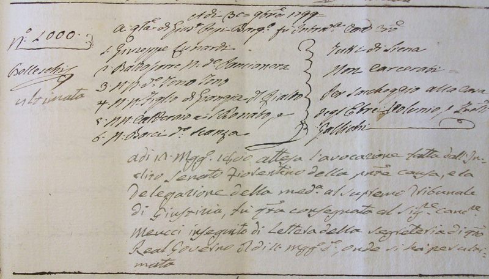

Il 29 novembre 1800 l’abitazione di Bacchino era stata visitata da un ladro che si era avvalso della complicità di un amico nel ruolo del cosiddetto “palo”.
Il derubato e il complice del ladro quattro anni prima avevano corso insieme il Palio, il primo nell’Oca e il secondo nella Tartuca.
Erano Pietro Bacchini detto Bacchino e Baldassarre Pagliai detto Pancianera un tipo “piuttosto basso di statura, di viso biancastro, di vita sottile, senza barba in viso, di capelli castagni legati a coda”.
Dalla casa di Bacchino erano stati portati via un orologio e due fibbie d’argento.
Nella denuncia si legge infatti che:
“Pietro Bacchini Rigattiere di questa città referisce come questa mattina verso le ore undici avendo mandato a casa sua posta nella Contrada dell’Onda sotto la Casa Frosini, il di lui fattorino denominato Giuseppe Manganelli a prendere della roba, ha veduto il detto Manganelli sotto il letto di se referente un giovinotto dell’età di circa à 20 anni del casato Romei, il quale dato un urtone al sopradetto fattorino è fuggito”.
A incastrare il ladro e il suo complice erano state le dichiarazioni del Manganelli che così ricordò: “Nell’andare a casa del Bacchini, avanti di me ci avevo un certo Baldassarre Pagliai chiamato Pancianera quale quando fù d’avanti alla casa del padrone cacciò un urlo, che non intesi cosa dicesse, ed avendo trovato sotto il detto letto il Romei, credo che fosse d’accordo anche detto Pagliai”.
Pancianera non godeva certo di una buona reputazione, tanto che veniva indicato da altri testi come “birbo assai” e il Romei non doveva esserlo di meno. Costui aveva approfittato del suo mestiere di fabbro per creare una “chiave adulterina” che lo aveva favorito a entrare nella casa del Bacchini che conosceva bene perché ne era stato in precedenza garzone.
Fra coloro che erano stati chiamati a deporre troviamo Niccolò Chiarini, detto Caino, allora diciassettenne maniscalco.
Avendo anch'egli lavorato alle dipendenze del Bacchini, era ritenuto attendibile per riconoscere gli oggetti trafugati.
A conferma che tutto il male non vien per nuocere, il furto subito da Bacchino e il conseguente processo hanno dato a lui l’opportunità di far conoscere ai posteri che il suo soprannome era dovuto al cognome Bacchini e non, come sarebbe stato naturale supporre senza questa notizia, alla devozione al dio Bacco.


Pancianera accusato di saccheggio durante
i moti del Viva Maria

 ACCADDE OGGI
ACCADDE OGGI